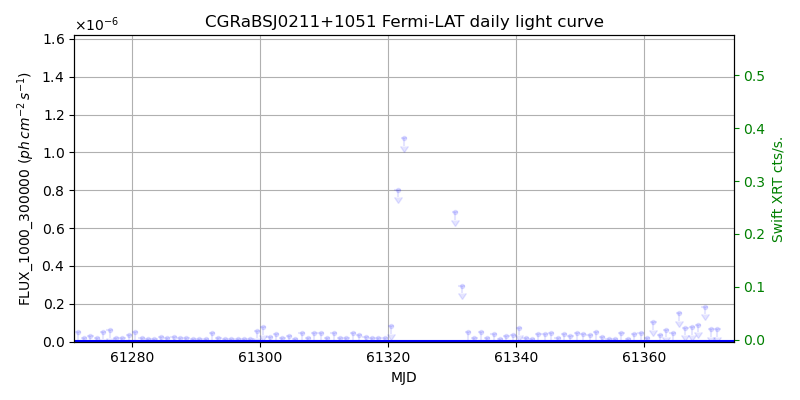

LAT Lightcurve site: https://fermi.gsfc.nasa.gov/ssc/data/access/lat/msl_lc/source/CGRaBS_J0211p1051
Swift site: https://www.swift.psu.edu/monitoring/source.php?source=CGRaBSJ0211+1051
NED: Query
Time of last update of this page: UT: 2026-11-28 16:12 (MJD: 61372.675)
| Property | Value |
|---|---|
| R.A. | 2:11:13.20 |
| Dec. | 10:51:36.0 |
| z | 0.200 |
| 3FGL SpectrumType | LogParabola |
| 3FGL PL Index | |
| 3FGL Flux_100_300000 | 6.33e-08 1 / (s cm2) |
| 3FGL Flux_1000_300000 | 5.93e-09 1 / (s cm2) |
| 3FGL Flux >200 GeV | 4.84e-12 1 / (s cm2) |
| 3FGL Extrap. Crab >200 GeV | 0.02 |
| 3FGL Flux After EBL Absorption >200GeV | 2.53e-12 1 / (s cm2) |
| 3FGL EBL Crab Fraction >200GeV | 0.01 |
| MJD | dMJD | Flux | dFlux | Frac3FGL | FracCrab>200GeV | EBLFracCrab>200GeV |
|---|---|---|---|---|---|---|
| 61367.50 | 0.50 | 8.10e-07 | 0.00e+00 | 0.00 | 0.00 | 0.00 |
| 61368.50 | 0.50 | 4.96e-07 | 0.00e+00 | 0.00 | 0.00 | 0.00 |
| 61369.50 | 0.50 | 1.24e-06 | 0.00e+00 | 0.00 | 0.00 | 0.00 |
| 61370.50 | 0.50 | 4.24e-07 | 0.00e+00 | 0.00 | 0.00 | 0.00 |
| 61371.50 | 0.50 | 4.75e-07 | 0.00e+00 | 0.00 | 0.00 | 0.00 |

| MJD | dMJD | Flux | dFlux | Frac3FGL | FracCrab>200GeV | EBLFracCrab>200GeV |
|---|---|---|---|---|---|---|
| 61335.50 | 3.50 | 1.82e-07 | 0.00e+00 | 0.00 | 0.00 | 0.00 |
| 61342.50 | 3.50 | 1.46e-07 | 5.44e-08 | 2.31 | 0.05 | 0.03 |
| 61349.50 | 3.50 | 1.00e-07 | 4.12e-08 | 1.58 | 0.03 | 0.02 |
| 61356.50 | 3.50 | 8.05e-08 | 4.15e-08 | 1.27 | 0.03 | 0.02 |
| 61363.50 | 3.50 | 2.06e-07 | 0.00e+00 | 0.00 | 0.00 | 0.00 |

| MJD | dMJD | Flux | dFlux | Frac3FGL | FracCrab>200GeV | EBLFracCrab>200GeV |
|---|---|---|---|---|---|---|
| 61367.50 | 0.50 | 7.59e-08 | 0.00e+00 | 0.00 | 0.00 | 0.00 |
| 61368.50 | 0.50 | 8.94e-08 | 0.00e+00 | 0.00 | 0.00 | 0.00 |
| 61369.50 | 0.50 | 1.85e-07 | 0.00e+00 | 0.00 | 0.00 | 0.00 |
| 61370.50 | 0.50 | 6.54e-08 | 0.00e+00 | 0.00 | 0.00 | 0.00 |
| 61371.50 | 0.50 | 6.69e-08 | 0.00e+00 | 0.00 | 0.00 | 0.00 |

| MJD | dMJD | Flux | dFlux | Frac3FGL | FracCrab>200GeV | EBLFracCrab>200GeV |
|---|---|---|---|---|---|---|
| 61335.50 | 3.50 | 9.38e-09 | 0.00e+00 | 0.00 | 0.00 | 0.00 |
| 61342.50 | 3.50 | 1.64e-08 | 0.00e+00 | 0.00 | 0.00 | 0.00 |
| 61349.50 | 3.50 | 9.69e-09 | 3.02e-09 | 1.63 | 0.03 | 0.02 |
| 61356.50 | 3.50 | 9.97e-09 | 0.00e+00 | 0.00 | 0.00 | 0.00 |
| 61363.50 | 3.50 | 2.63e-08 | 0.00e+00 | 0.00 | 0.00 | 0.00 |
--------------------------------------------------------- Using user-supplied coords: 2:11:13.20 10:51:36.0 2000 --------------------------------------------------------- FLWO UT night of: 2026-11-29 Local Sid. @ Midnight: 04:08 Sunset (-15.0) (local, UT): 18:31 01:31 Sunrise (-15.0) (local, UT): 05:53 12:53 Moonrise (local, UT): 21:57 04:57 Moonset (local, UT): Moon phase: 0.72 --------------------------------------------------------- AzTime LSID UT Obj_el Obj_az Mn_el Mn_az Sep. --------------------------------------------------------- 18:31 22:39 01:31 36.8 100.5 -32.9 32.1 94.5 19:01 23:09 02:01 43.0 105.6 -29.4 38.9 94.8 19:31 23:39 02:31 49.1 111.7 -25.4 45.0 95.2 20:01 00:09 03:01 54.9 119.2 -21.0 50.6 95.6 20:31 00:39 03:31 60.2 128.8 -16.2 55.6 95.9 21:01 01:09 04:01 64.7 141.4 -11.1 60.2 96.3 21:31 01:39 04:31 68.0 158.0 -5.4 64.5 96.6 22:01 02:09 05:01 69.3 178.1 0.4 68.5 96.9 22:31 02:39 05:31 68.4 198.4 5.8 72.2 97.2 23:01 03:10 06:01 65.4 215.8 11.6 75.8 97.5 23:31 03:40 06:31 61.1 229.1 17.5 79.4 97.8 00:01 04:10 07:01 55.9 239.2 23.6 82.9 98.0 00:31 04:40 07:31 50.2 247.0 29.7 86.5 98.3 01:01 05:10 08:01 44.2 253.3 35.8 90.3 98.5 01:31 05:40 08:31 38.0 258.6 42.0 94.4 98.8 02:01 06:10 09:01 31.7 263.3 48.1 99.1 99.0 02:31 06:40 09:31 25.3 267.5 54.2 104.7 99.2 03:01 07:10 10:01 18.9 271.5 60.1 111.7 99.4 03:31 07:40 10:31 12.5 275.3 65.6 121.1 99.6 04:01 08:10 11:01 6.3 279.2 70.5 134.7 99.8 04:31 08:40 11:31 0.3 283.0 74.0 154.7 100.0 05:01 09:11 12:01 -6.2 287.1 75.2 181.1 100.2 05:31 09:41 12:31 -12.4 291.4 73.6 206.8 100.4 05:53 10:02 12:53 -16.6 294.7 71.0 221.2 100.5 --------------------------------------------------------- Dark hours >55 deg.: 1.92 srcstart (UT): 2026-11-29 03:01 srcend (UT): 2026-11-29 04:57